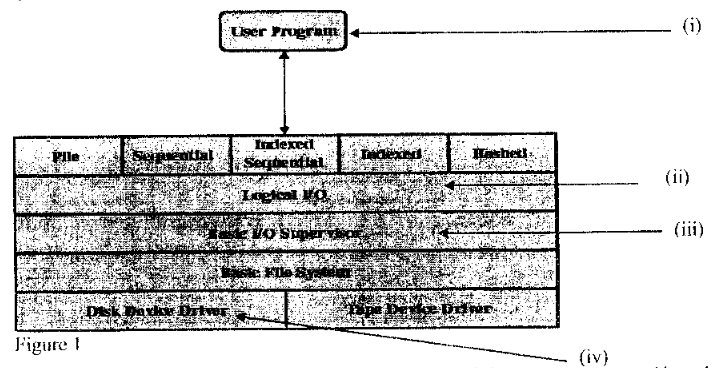

OPERATING SYSTEMS
Exam Code: 2920/105
Duration: 3 hours
Period: July 2017
Explain each of the following file allocation methods: (i) contiguous; (i) Contiguous Allocation: In contiguous allocation, each file occupies a set of adjacent blocks on the disk. The disk blocks are allocated to a file in a contiguous manner. This means that if a file requires 'n' blocks of disk space, then 'n' contiguous blocks are allocated to it. The disk address of the first block and the number of blocks allocated are recorded in the directory entry for that file. This method simplifies file access and provides good performance for sequential file access. (ii) linked. (ii) Linked Allocation: In linked allocation, each file is a linked list of disk blocks. The blocks allocated to a file may be scattered anywhere on the disk. Each block contains data and a pointer to the next block in the file. The directory entry for a file contains a pointer to the first block of the file. Following the pointers in each block leads to the subsequent blocks of the file. This method eliminates external fragmentation and allows files to grow dynamically, but it is less efficient for direct access due to the need to traverse the linked list. (b) Outline two approaches that could be used to improve computer file performance. Disk Caching: Implementing disk caching can significantly improve file access performance. Disk caching uses a portion of main memory (RAM) to store frequently accessed file blocks. When a file is accessed, the system first checks the cache. If the data is found in the cache (cache hit), it is retrieved much faster from RAM than from the disk. This reduces the average access time and improves overall file system performance. File System Defragmentation: File system defragmentation reorganizes files on the disk to store them in contiguous blocks. Over time, files can become fragmented, meaning their blocks are scattered across the disk. Defragmentation reduces seek times because the disk head needs to move less to read a file. This leads to faster file access and improved file system performance, especially for frequently used files. (c) Four jobs were scheduled as follows: 7 minutes, 3 minutes, 5 minutes and 2 minutes. Compare the turnaround times using each of the following scheduling algorithms: (i) Shortest Job First (SJF); (i) Shortest Job First (SJF): Jobs in order of burst time: 2, 3, 5, 7 minutes. Gantt chart: [Job 4 (2)] [Job 2 (5)] [Job 3 (10)] [Job 1 (17)] Completion times: Job 4: 2 minutes Job 2: 2 + 3 = 5 minutes Job 3: 5 + 5 = 10 minutes Job 1: 10 + 7 = 17 minutes Turnaround times (TAT) = Completion Time - Arrival Time (assuming arrival time is 0 for all jobs): TAT (Job 4) = 2 minutes TAT (Job 2) = 5 minutes TAT (Job 3) = 10 minutes TAT (Job 1) = 17 minutes Average Turnaround Time (SJF) = (2 + 5 + 10 + 17) / 4 = 34 / 4 = 8.5 minutes. (ii) First Come First Served (FCFS). (ii) First Come First Served (FCFS): Jobs in order of arrival: Job 1 (7), Job 2 (3), Job 3 (5), Job 4 (2) minutes. Gantt chart: [Job 1 (7)] [Job 2 (10)] [Job 3 (15)] [Job 4 (17)] Completion times: Job 1: 7 minutes Job 2: 7 + 3 = 10 minutes Job 3: 10 + 5 = 15 minutes Job 4: 15 + 2 = 17 minutes Turnaround times (TAT) = Completion Time - Arrival Time (assuming arrival time is 0 for all jobs): TAT (Job 1) = 7 minutes TAT (Job 2) = 10 minutes TAT (Job 3) = 15 minutes TAT (Job 4) = 17 minutes Average Turnaround Time (FCFS) = (7 + 10 + 15 + 17) / 4 = 49 / 4 = 12.25 minutes. Comparison: The Shortest Job First (SJF) algorithm has a lower average turnaround time (8.5 minutes) compared to the First Come First Served (FCFS) algorithm (12.25 minutes) for these jobs. SJF is generally better at minimizing turnaround time when job burst times are known in advance. (d) Outline four computer files attributes. Name: The name is a human-readable identifier for the file, used to access and refer to the file within the file system. It's how users and applications identify a specific file. Naming conventions vary between operating systems, but typically include a base name and an extension. Type: The type of a file indicates its format and intended use. File types can be identified by extensions (e.g., .txt, .jpg, .exe) or internal file headers. The operating system and applications use the file type to determine how to process the file's contents. Common types include text files, executable files, image files, and directories. Location: The location attribute specifies where the file is stored within the directory structure of the file system. It is often represented as a path, indicating the sequence of directories to traverse to reach the file. The location is crucial for the operating system to find and access the file's data on the storage device. Size: The size attribute indicates the current amount of storage space occupied by the file, typically measured in bytes, kilobytes, megabytes, or gigabytes. The size reflects the quantity of data stored in the file and is important for managing storage space and understanding file resource usage. (e) With the aid of a diagram in each case, describe two types of directory structures. (i) Single-Level Directory Structure: In a single-level directory structure, there is only one directory for all files in the system. All files are placed in this single directory. This is the simplest directory structure. Diagram: Description: All files are contained within one directory. It is easy to implement but leads to naming conflicts if multiple users or applications need to use the same file name. It also becomes difficult to organize and manage a large number of files. (ii) Two-Level Directory Structure: In a two-level directory structure, there is a master directory (root directory) and user directories under it. Each user has their own directory, and they can create files within their directory. Diagram: Description: Each user has their own user directory in the root directory. This structure resolves naming conflicts as each user has a separate namespace for their files. However, it still lacks flexibility for users to create subdirectories to further organize their files. 2. (a) (i) State two modes of operations of programmable clocks as used in operating systems. One-Shot Mode Square-Wave Mode (ii) Explain two duties of an I/O control system. Device Driver Management: The I/O control system is responsible for managing device drivers. Device drivers are software modules that interface with specific hardware devices. The I/O control system loads, initializes, and unloads device drivers as needed. It provides a standardized interface for the operating system to communicate with diverse hardware devices, abstracting away the hardware-specific details. This includes handling driver installation, configuration, and updates to ensure proper communication between the OS and hardware. I/O Request Handling and Scheduling: The I/O control system manages and schedules I/O requests from various processes. When a process initiates an I/O operation, the request is routed to the I/O control system. This system then queues and schedules these requests based on various algorithms (e.g., priority, FCFS, SSTF for disks) to optimize I/O performance and fairness. It ensures that I/O operations are performed in an efficient order, minimizing latency and maximizing throughput. The I/O control system also handles issues like buffering and caching to further improve I/O efficiency. (b) A disk has 40 cylinders. An initial request comes in to read a block on cylinder 6. New requests come in for cylinder 1, 31, 11, 29, 4 and 7 in that order. (i) Calculate the arm motions required using each of the following disk scheduling algorithms: I. Shortest Seek First (SSF); I. Shortest Seek First (SSF): Initial head position: 6. Requests: 1, 31, 11, 29, 4, 7. Starting at 6, closest request is 7, then 4, then 1, then 11, then 29, then 31. Seek sequence: 6 -> 7 -> 4 -> 1 -> 11 -> 29 -> 31. Arm motions: |7-6| + |4-7| + |1-4| + |11-1| + |29-11| + |31-29| = 1 + 3 + 3 + 10 + 18 + 2 = 37 cylinders. Arm motions for SSF: 37 cylinders. II. First Come First Served (FCFS); II. First Come First Served (FCFS): Initial head position: 6. Requests in order: 1, 31, 11, 29, 4, 7. Seek sequence: 6 -> 1 -> 31 -> 11 -> 29 -> 4 -> 7. Arm motions: |1-6| + |31-1| + |11-31| + |29-11| + |4-29| + |7-4| = 5 + 30 + 20 + 18 + 25 + 3 = 101 cylinders. Arm motions for FCFS: 101 cylinders. III. SCAN. III. SCAN (Elevator): Assuming SCAN moves towards cylinder 0 initially. Initial head position: 6. Requests: 1, 31, 11, 29, 4, 7. Moving towards 0: 6 -> 4 -> 1 -> 0 (turnaround) -> 7 -> 11 -> 29 -> 31. Seek sequence: 6 -> 4 -> 1 -> 7 -> 11 -> 29 -> 31. Arm motions: |4-6| + |1-4| + |7-1| + |11-7| + |29-11| + |31-29| = 2 + 3 + 6 + 4 + 18 + 2 = 35 cylinders. Arm motions for SCAN: 35 cylinders. (ii) Represent graphically each of the disk scheduling algorithms in (i). Graphical Representation of Disk Scheduling Algorithms: I. Shortest Seek First (SSF) Gantt Chart: II. First Come First Served (FCFS) Gantt Chart: III. SCAN (Elevator) Gantt Chart: (c) A certain organization opted for a client-server model for its operating systems. Explain two advantages that could have influenced the choice. Resource Sharing and Centralized Management: The client-server model facilitates efficient resource sharing. Servers can provide centralized access to resources such as files, databases, printers, and applications. This reduces redundancy and cost as resources are not duplicated on every client machine. Additionally, it allows for centralized management and administration of these resources. IT staff can manage, update, and secure resources from a central server location, simplifying maintenance and improving consistency across the organization. Improved Security and Scalability: Client-server architectures often offer enhanced security. Security measures can be concentrated on the server-side, making it easier to implement and enforce security policies. Access control, authentication, and data protection are managed centrally, reducing vulnerabilities at individual client machines. Furthermore, client-server systems are generally more scalable. As the organization grows, it is easier to add more clients without significantly impacting performance, and server resources can be upgraded or scaled to meet increasing demands. This scalability is crucial for long-term growth and adaptability. (d) An IT professional designed an operating system consisting of several modules. Each module was designed on one below it. (i) State the name given to the resultant structure after design. (i) Layered Structure (ii) Outline one advantage of this structure. (ii) Simplified Design and Development: A layered structure simplifies operating system design and development by breaking down the system into smaller, more manageable modules or layers. Each layer provides specific services and relies only on the layer below it. This modularity allows developers to focus on implementing and debugging individual layers independently, making the development process more organized and less complex. Changes in one layer are less likely to affect other layers, promoting easier maintenance and updates. 3. (a) (i) Describe the terms relocating loader as used in memory management. (i) Relocating Loader: A relocating loader is a type of loader that can load program code and data into any available region of memory. Unlike absolute loaders which require programs to be loaded at a specific memory address, a relocating loader adjusts the program's addresses (both code and data addresses) during loading so that it can run correctly regardless of its actual load address. This is crucial for multiprogramming and dynamic memory management, allowing programs to be loaded into different memory locations each time they are executed, improving memory utilization and flexibility. (ii) With the aid of a diagram in each case explain the effect of double buffering as compared to single buffering data transfer. (ii) Double Buffering vs. Single Buffering Data Transfer: Single Buffering: In single buffering, only one buffer is used in system memory for data transfer between an I/O device and the process. The process must wait until the buffer is filled (for input) or emptied (for output) before it can continue processing or initiate another I/O operation. During data transfer, the CPU might be idle, waiting for I/O to complete. This can lead to performance bottlenecks, especially if I/O operations are slow. Diagram of Single Buffering: Double Buffering: In double buffering, two buffers are used. While one buffer is being filled by the I/O device (for input) or emptied by the process (for output), the process (or device) can simultaneously work with the other buffer. This allows for overlapping of I/O operations with processing, reducing the wait time and improving throughput. While the process is processing data in one buffer, the next block of data can be transferred into the other buffer, and vice versa. This technique minimizes CPU idle time due to I/O waits. Diagram of Double Buffering: Effect Comparison: Single buffering leads to alternating periods of I/O and processing, with CPU often idle during I/O. Double buffering enables concurrent I/O and processing, significantly reducing CPU idle time and increasing data transfer rates and overall system efficiency by overlapping operations. (b) Mary's printer has a device that intercepts data sent to it, stores the data in disk files and manages the printing when convenient for the system. (i) Name the device that Mary had installed in her printer. (i) Spooler (ii) Outline three advantages she would get from the device identified in (i). Improved System Throughput: A spooler improves system throughput by allowing processes to quickly output data to be printed without waiting for the actual printing to complete. The data is spooled to disk or memory, and the process can continue with other tasks. Printing occurs in the background, managed by the spooler, thus freeing up the CPU and application processes to perform other operations concurrently. This concurrent operation significantly increases overall system efficiency. Printer Resource Management: A spooler effectively manages printer resources, especially in a shared environment. It can handle multiple print jobs from different users or processes, queuing them and printing them in an orderly fashion. This prevents print jobs from interfering with each other and ensures fair access to the printer. The spooler can also prioritize print jobs, handle printer errors, and provide status information about print queues, making printer usage more organized and efficient. Support for Delayed and Scheduled Printing: Spooling allows for delayed or scheduled printing. Users can submit print jobs even when the printer is busy or unavailable, and the spooler will store these jobs and print them when the printer becomes free or at a scheduled time. This is particularly useful for large print jobs or for printing during off-peak hours to reduce system load during busy periods. It provides flexibility in managing print tasks and optimizes printer usage based on system load and user needs. (c) Explain the function of job control language as used in operating systems. Job Control Language (JCL) Function: The Job Control Language (JCL) serves as a command language used primarily in batch processing systems to instruct the operating system on how to run a batch job. JCL defines the sequence of operations, the programs to be executed, the input and output data sets, and the resources required for a job. It acts as an interface between the user or application and the operating system, specifying all necessary details for the OS to execute a series of tasks automatically without user intervention during processing. JCL enables automation of complex workflows and efficient batch processing. (d) A certain organization bought a new system for its file systems. Explain three considerations that could be put in place with regard to their file management. Data Backup and Recovery Strategy: A crucial consideration is establishing a robust data backup and recovery strategy. This involves regular backups of important files and file system metadata to a separate storage medium. The backup strategy should include scheduling (frequency of backups), selection of data to be backed up, and backup methods (e.g., full, incremental, differential). A well-defined recovery plan is equally important, outlining procedures for restoring data in case of data loss due to hardware failure, software errors, or human mistakes. Regular testing of the recovery process is essential to ensure its effectiveness. File System Security and Access Control: Implementing strong file system security and access control mechanisms is vital. This includes setting appropriate file permissions and access rights to control who can access, modify, or delete files and directories. Access control should be based on the principle of least privilege, granting users only the necessary permissions for their tasks. Security considerations should also include protection against unauthorized access, malware, and data breaches. Regular security audits and updates are necessary to maintain file system integrity and confidentiality. File System Organization and Structure: Careful planning of file system organization and structure is important for efficient file management and user accessibility. This involves designing a logical directory hierarchy that is intuitive and easy to navigate for users. Consistent naming conventions for files and directories should be established to improve file findability and organization. The structure should be scalable to accommodate future data growth and organizational changes. A well-organized file system enhances productivity, simplifies file retrieval, and reduces administrative overhead. 4. (a) (i) Define the term virtual memory as used in operating systems. (i) Virtual Memory: Virtual memory is a memory management technique that allows processes to execute even if they are not entirely loaded into physical memory. It creates an illusion of a larger memory space than physically available RAM by using disk space as an extension of RAM. Virtual memory works by swapping pages (blocks of virtual memory) between RAM and disk. This technique enables the execution of programs larger than physical memory and improves the degree of multiprogramming. (ii) Consider an executing process P that issues I/O request. The processes temporarily stopped. At some later point, a disk interrupt occurs and the driver detects that P's request is satisfied. At some later time, the operating system looks for a job to run and picks P. With the aid of diagrams outline these process states. (ii) Process State Transitions for I/O Request: Initial State: Running - Process P is initially in the running state, executing on the CPU. Diagram 1: Running State Transition 1: Blocked/Waiting State - When Process P issues an I/O request, it transitions to the blocked (or waiting) state. It is no longer using the CPU and is waiting for the I/O operation to complete. Diagram 2: Blocked State Transition 2: Ready State - Upon completion of the I/O request and processing of the disk interrupt, Process P becomes ready to run again. It transitions from the blocked state to the ready state, waiting to be scheduled on the CPU. Diagram 3: Ready State Transition 3: Running State (again) - Eventually, the operating system scheduler selects Process P from the ready queue to run on the CPU. Process P transitions back to the running state. Diagram 4: Running State (Resumed) (b) Figure 1 shows file system architecture of a certain organization.  Use it to answer the question that follows. (b) Outline the function of each of the parts marked (i), (ii), (iii) and (iv). (i) User Program: The User Program is the application or software being executed by the user. It is at the highest level of the file system architecture and interacts with the file system to perform file operations such as creating, reading, writing, and deleting files. The user program makes system calls to request file system services. It represents the interface through which users or applications interact with the file system. (ii) Logical File System: The Logical File System layer is responsible for interpreting file operations requested by the user program. It manages the directory structure, file naming, and file metadata (attributes). This layer translates logical file operations (like 'open file by name') into a series of lower-level operations that the file organization module can understand. It deals with logical file and directory structures, access control, and file system integrity from a logical perspective. (iii) File Organization Module: The File Organization Module (or File System Implementation) is responsible for mapping logical file blocks to physical blocks on the storage device. It manages the physical storage space, block allocation, and free space management. This layer implements the file allocation method (e.g., contiguous, linked, indexed) and translates logical block addresses into physical disk addresses. It also handles buffering and caching to optimize disk I/O. This module is the bridge between the logical view of files and the physical storage. (iv) Basic I/O Supervisor: The Basic I/O Supervisor (or I/O Control Layer) is the lowest layer of the file system architecture that directly interacts with the hardware. It is responsible for initiating and controlling physical I/O operations. This layer includes device drivers that communicate with specific disk controllers. It handles the physical transfer of data between memory and the disk, manages I/O channels, and controls the hardware-level operations required to read and write data to the storage device. It provides a hardware-independent interface for the higher file system layers. (c) Differentiate between monoprogramming and multiprogramming as used in operating systems. Monoprogramming: Monoprogramming is an operating system approach where only one program can reside in main memory and execute at a time. When a program is running, it has exclusive control of all system resources, including the CPU, memory, and I/O devices. No other program can be executed until the current program completes. This is a simpler form of operating system, but it leads to low CPU utilization, as the CPU often sits idle while the running program is waiting for I/O operations to complete. Throughput is low, and response time can be poor, especially for interactive applications. Multiprogramming: Multiprogramming is an operating system technique that allows multiple programs to reside in main memory simultaneously. The operating system keeps several programs in memory and switches between them to keep the CPU busy. When one program is waiting for an I/O operation, the CPU can switch to another program that is ready to execute. This significantly improves CPU utilization and system throughput. Multiprogramming enhances system efficiency by overlapping CPU and I/O operations, leading to better resource utilization and improved responsiveness compared to monoprogramming. It is the basis for modern operating systems. Key Difference: Monoprogramming executes one program at a time, leading to idle CPU time, while multiprogramming allows multiple programs to reside in memory and share the CPU, improving CPU utilization and throughput. (d) (i) Explain the term starvation as used in operating systems. (i) Starvation in Operating Systems: Starvation in operating systems refers to a situation where a process is indefinitely denied access to the resources it needs to make progress, even though the resources are available. This typically occurs in priority scheduling systems where high-priority processes continuously monopolize resources, preventing low-priority processes from ever getting a chance to run or acquire necessary resources. Starvation is a severe form of unfairness and can lead to critical processes being unable to complete, degrading system performance and responsiveness. (ii) With the aid of a diagram, describe a direct memory access operation. (ii) Direct Memory Access (DMA) Operation: DMA is a hardware mechanism that allows I/O devices to transfer data directly to or from main memory without involving the CPU for every byte transferred. This significantly reduces CPU overhead and improves the efficiency of data transfers, especially for large blocks of data. Diagram of DMA Operation: Steps in DMA Operation: CPU Initialization: The CPU initiates the DMA transfer by configuring the DMA controller. It provides the DMA controller with details such as the source address (device buffer), destination address (memory location), the amount of data to be transferred, and the direction of transfer (read or write). DMA Request: The I/O device requests a data transfer through the DMA controller. Bus Grant: The DMA controller requests control of the system bus from the CPU. Once the CPU grants the bus, the DMA controller becomes the bus master for the duration of the data transfer. Data Transfer: The DMA controller directly transfers data between the I/O device and main memory, bypassing the CPU for each byte transfer. The DMA controller manages the address and control lines to perform the data transfer in blocks. Transfer Completion: Once the data transfer is complete, the DMA controller signals the CPU via an interrupt. The CPU is then notified that the data transfer is finished and can proceed with processing the data. Effect: DMA operation significantly offloads the CPU from handling byte-by-byte data transfers, allowing the CPU to perform other processing tasks concurrently during I/O operations. This results in faster data transfer rates and improved system performance, especially for high-bandwidth I/O devices. 5. (a) State two purposes of device drivers as used in a computer operating systems. Hardware Abstraction: Device drivers provide a hardware abstraction layer. They hide the complexities and specific details of hardware devices from the operating system kernel and application software. Drivers offer a uniform interface for the OS to interact with different types of hardware, regardless of their manufacturer or model. This abstraction simplifies OS development and makes the system more portable, as the OS does not need to be rewritten for every new device. Device Communication and Control: Device drivers are responsible for enabling communication and control of hardware devices. They contain the specific code and instructions needed to send commands to devices, receive data from them, and handle device-specific operations. Drivers act as translators, converting generic OS requests into device-specific commands and interpreting device responses. They manage the interaction protocols and timing requirements of hardware devices, ensuring correct and efficient operation. (b) (i) Outline two operations that could be used to implement a semaphore. Wait (or P or Acquire) Operation: The wait operation, often denoted as `wait(S)` or `P(S)`, is used to decrement the semaphore value. If the semaphore value becomes negative after decrementing, the process executing the wait operation is blocked (put to sleep) and added to the semaphore's waiting queue. The wait operation is used to acquire or request access to a resource protected by the semaphore. It ensures that a process waits until the resource is available (semaphore value is positive). Signal (or V or Release) Operation: The signal operation, often denoted as `signal(S)` or `V(S)`, is used to increment the semaphore value. If there are processes blocked in the semaphore's waiting queue, one of them is unblocked (woken up) and moved to the ready queue. The signal operation is used to release a resource that was being held and to notify waiting processes that the resource might be available. It allows processes to proceed after a resource has been released. (ii) Describe three requirements for critical section problem as used in process management. Mutual Exclusion: Mutual exclusion is a primary requirement. It dictates that only one process can be inside its critical section at any given time. If one process is executing in its critical section, no other process is allowed to enter its critical section. This is essential to prevent race conditions and data inconsistency when multiple processes access shared resources. Mutual exclusion ensures that access to shared resources is serialized and controlled, maintaining data integrity. Progress: Progress ensures that if no process is executing in its critical section and some processes wish to enter their critical sections, then only those processes that are not in their remainder sections can participate in deciding which will enter its critical section next, and this selection cannot be postponed indefinitely. In simpler terms, if no process is in a critical section and some processes want to enter, one of them should be able to enter without waiting indefinitely. Progress avoids deadlock or indefinite postponement in entering critical sections. Bounded Waiting: Bounded waiting requires that there must be a limit on the number of times other processes can enter their critical sections after a process has made a request to enter its critical section and before that request is granted. This means no process should face starvation. There should be a guarantee that each process will eventually get to enter its critical section within a bounded amount of time, preventing indefinite delay. Bounded waiting ensures fairness and prevents any process from being perpetually blocked from accessing the critical section. (c) Differentiate between first fit and next fit dynamic partitioning algorithms. First Fit: First Fit is a dynamic memory allocation algorithm that allocates the first available partition (hole) in memory that is large enough to satisfy the request. When searching for a free partition, First Fit starts from the beginning of the memory or the list of free partitions and stops as soon as it finds a partition that is large enough. It then allocates the required memory from this partition, potentially splitting the partition if it's larger than needed. First Fit is simple to implement and generally fast for allocation, but it can lead to fragmentation, particularly external fragmentation, and may create many small partitions at the beginning of memory. Next Fit: Next Fit is similar to First Fit but starts its search for a free partition from the location where the previous allocation ended, rather than always starting from the beginning of memory. It keeps track of the last partition allocated and begins searching for the next available partition from that point onwards, wrapping around to the beginning if necessary. Next Fit aims to distribute allocations more evenly across memory, potentially reducing clustering of allocations at the beginning. However, it can also lead to fragmentation and might not always find the best fitting partition, potentially resulting in slightly worse memory utilization compared to First Fit in some scenarios. Next Fit is also relatively simple to implement. Key Difference: First Fit always starts searching for a free partition from the beginning of memory, while Next Fit starts its search from the location of the last allocation. Next Fit aims to improve allocation distribution across memory compared to First Fit. (d) An operating system uses detection and recovery methods to deal with possible deadlocks. Explain three criteria that could be used when selecting processes to abort in such an operating system. Process Priority: Process priority can be a criterion for selecting processes to abort. In a priority-based system, it may be more beneficial to abort lower-priority processes to resolve a deadlock. Aborting high-priority processes can have more significant consequences, affecting critical system operations or user-critical tasks. By choosing to terminate lower-priority processes, the system aims to minimize the impact on overall system functionality and user experience, preserving the execution of more important tasks. Process Execution Time/Progress: The execution time or progress of a process can be considered. Processes that have consumed less CPU time or made less progress towards completion might be preferable candidates for abortion. Aborting processes that are early in their execution or have not performed much work results in less wasted computation compared to aborting processes that are close to completion or have already performed significant tasks. This criterion aims to minimize the loss of computational effort due to process termination. Resources Held by Process: The number and type of resources held by a process can influence the selection for abortion. Processes holding fewer resources or resources that are easily preemptible or less critical might be chosen for termination. Aborting a process that holds many resources or critical resources can lead to cascading aborts and system instability. Selecting processes holding fewer and less critical resources aims to minimize resource wastage and disruption to other processes. The type of resources (e.g., exclusive locks, shared resources) also plays a role in the decision. 6. (a) Outline three functions of a memory manager as used in computers. Memory Allocation and Deallocation: The memory manager is responsible for allocating memory to processes when they need it and deallocating memory when processes no longer require it. This includes keeping track of available memory space, selecting suitable memory blocks for allocation, and reclaiming memory when processes terminate or release memory. Efficient allocation and deallocation are crucial for managing system resources and supporting multiprogramming. Memory Protection: The memory manager ensures memory protection, preventing processes from accessing memory regions that do not belong to them. This is vital for system stability and security, as it prevents one process from corrupting the memory of another process or the operating system itself. Memory protection mechanisms include techniques like base and limit registers, segmentation, and paging, which define and enforce memory access boundaries for each process. Virtual Memory Management: In systems with virtual memory, the memory manager implements and manages the virtual memory system. This involves handling page faults, swapping pages between RAM and disk, and maintaining page tables that translate virtual addresses to physical addresses. Virtual memory management allows processes to use more memory than physically available, improving memory utilization and enabling the execution of larger programs. It also handles memory sharing and protection in a virtualized environment. (b) (i) State two primitive system calls used in message passing. Send (message): The send system call is used by a process to transmit a message to another process or processes. It typically involves specifying the destination process (or process group) and the message data. The send operation may be synchronous (blocking) or asynchronous (non-blocking), depending on the communication semantics. It is a fundamental operation for inter-process communication using message passing. Receive (message): The receive system call is used by a process to receive a message. It typically involves specifying a source process (or allowing messages from any source) and providing a buffer to store the received message. Like send, receive can be synchronous or asynchronous. When synchronous, the receiving process blocks until a message arrives. Receive is the counterpart to send, enabling processes to exchange information via messages. (ii) A system administrator of a certain organization is contemplating using monitors as inter-process communication method. Explain two challenges the administrator is likely to face. Complexity in Nested Monitor Calls: One challenge is the complexity in handling nested monitor calls. If a process within a monitor calls another monitor (nested call), it can lead to complications, particularly with respect to mutual exclusion and condition variables. Improperly managed nested monitor calls can potentially lead to deadlocks or unexpected behavior if not carefully designed and implemented. Ensuring correct synchronization and avoiding deadlocks in nested monitor scenarios requires careful consideration of monitor entry and exit protocols and condition variable usage. Potential for Priority Inversion: Priority inversion can be a challenge when using monitors in priority-based systems. If a high-priority process is blocked waiting to enter a monitor that is currently held by a low-priority process, and if medium-priority processes preempt the low-priority process, the high-priority process can be effectively blocked by medium-priority processes, violating priority order. While monitors provide mutual exclusion, they do not inherently prevent priority inversion, and additional mechanisms (like priority inheritance or priority ceiling protocols) might be needed to mitigate this issue and ensure predictable priority behavior. (c) Process A of capacity 15k was running in the memory, and then processes B of capacity 20k and C of capacity 35k are created. Later process A terminates and is swapped out of memory to disk. Then process D of capacity 10k is created and then process B is swapped out of memory to disk. Then process E of capacity 18k is created. The total memory capacity is 75k. (i) Use sketches to illustrate this memory allocation. (i) Memory Allocation Sketches: Initial State: Process A (15k) Running Step 1: Processes B (20k) and C (35k) Created (assuming First-Fit and sufficient contiguous space) Step 2: Process A Terminates and Swapped Out (Memory becomes free where A was) Step 3: Process D (10k) Created (allocated in the first available free space) Step 4: Process B Swapped Out (Memory becomes free where B was) Step 5: Process E (18k) Created (allocated in the contiguous free space of 20k) (ii) Explain the state that the final memory would have. (ii) Final Memory State: The final memory state shows fragmentation. We have Process D (10k), followed by 5k of free memory, then Process E (18k), 2k of free memory, Process C (35k), and finally another 5k of free memory. The total free memory is 5k + 2k + 5k = 12k, which is scattered into three non-contiguous blocks. This state illustrates external fragmentation, where sufficient total free memory exists (12k) but it is not contiguous, potentially making it difficult to allocate larger processes that require contiguous memory blocks, even though the total available memory is adequate. (d) Mary an IT expert would like to design an operating system for I/O devices. Explain two issues that she could put into consideration. Device Diversity and Heterogeneity: A major issue is the diversity and heterogeneity of I/O devices. Operating systems need to support a wide range of I/O devices, from keyboards and mice to disks, network interfaces, and specialized sensors. These devices vary greatly in their characteristics (speed, data transfer methods, control interfaces, protocols). Mary needs to design the OS to accommodate this diversity through modular device drivers that can be easily added or updated to support new devices. The OS must provide a consistent and abstract interface for applications to interact with these diverse devices, hiding the hardware-specific details. Performance and Efficiency of I/O Operations: Performance and efficiency of I/O operations are critical. I/O operations are often the bottleneck in computer systems, especially with increasing data volumes and real-time requirements. Mary must consider efficient I/O management techniques, such as buffering, caching, DMA, and I/O scheduling algorithms, to minimize I/O latency and maximize throughput. The OS design should aim to overlap I/O operations with CPU processing to improve overall system performance. Efficient handling of interrupts, device polling, and data transfer mechanisms are essential for achieving high I/O performance in the operating system. 7. (a) Explain each of the following terms as used in operating systems. (i) compaction; (i) Compaction: Compaction is a memory management technique used to reduce external fragmentation. It involves rearranging the processes in memory so that all free memory is contiguous in one large block. This is achieved by moving all allocated blocks to one end of memory, leaving all free blocks together in a single block at the other end. Compaction makes it possible to allocate larger contiguous blocks of memory to processes that could not be allocated before due to fragmentation, even if the total amount of free memory was sufficient. (ii) overlaying. (ii) Overlaying: Overlaying is a memory management technique used in older systems to enable a program to be larger than the amount of memory allocated to it. It works by dividing the program into logical units called overlays. Only the overlays currently needed are kept in memory; when a different overlay is needed, it replaces the current one in memory. Overlaying requires manual programming effort to divide the program and manage overlays, and it is less common in modern systems with virtual memory. (b) (i) State three conditions that could cause a program running in a computer to terminate. Normal Completion: A program terminates upon normal completion when it has executed all its instructions successfully and reaches its natural end point. This is the intended and expected termination scenario where the program finishes its task without errors or external interruptions. The program may explicitly terminate itself using an exit system call, or it may implicitly terminate when it reaches the end of its main execution flow. Voluntary Termination due to Error: A program may terminate voluntarily due to an error condition it encounters during execution. This occurs when the program detects an error it cannot recover from, such as invalid input, file not found, or resource allocation failure. In such cases, the program may decide to terminate itself gracefully to prevent further erroneous operations or system instability. The program typically reports the error condition before terminating. Involuntary Termination by Operating System: A program can be involuntarily terminated by the operating system due to various reasons. These include fatal errors like segmentation faults (memory access violations), illegal instructions, time limit exceeded, or system crashes. The operating system may terminate a program to protect system integrity, prevent resource hogging, or in response to external signals (e.g., user-initiated termination, process kill command). Involuntary termination is often a result of unrecoverable errors or system-level policies. (ii) State one scheduling goal that could be achieved in each of the following systems; I. batch systems; I. Batch Systems: Maximize throughput is a primary scheduling goal in batch systems. The objective is to process as many jobs as possible in a given amount of time. Batch systems are designed for high-volume, non-interactive job processing, and maximizing the number of completed jobs (throughput) is a key metric for efficiency. Minimizing turnaround time and maximizing resource utilization also contribute to achieving high throughput. II. real time systems. II. Real Time Systems: Meeting deadlines is a critical scheduling goal in real-time systems. Real-time systems must respond to events within strict time constraints. The primary goal is to ensure that tasks are completed before their deadlines to guarantee system correctness and responsiveness. Scheduling algorithms in real-time systems prioritize tasks based on their deadlines and timing requirements to ensure timely execution and prevent deadline misses, which could lead to system failure. (c) Table 1 show two concurrent processes P1 and P2 and their timed I/O requests. Use it to answer the question that follows. Table 1 Draw the resource allocation graph for these possible executions of the processes, indicating when deadlock occurs. Resource Allocation Graph and Deadlock Analysis: Resources: R1, R2. Processes: P1, P2. Time 1: P1 requests R1, P2 requests R2. Graph at Time 1: No deadlock yet. Time 2: P1 requests R2, P2 requests R1. Graph at Time 2: Deadlock occurs at Time 2. Deadlock Condition: At Time 2, P1 is holding R1 and requesting R2. Simultaneously, P2 is holding R2 and requesting R1. This creates a circular wait condition: P1 is waiting for a resource (R2) held by P2, and P2 is waiting for a resource (R1) held by P1. This circular dependency forms a cycle in the resource allocation graph, indicating a deadlock. Resource Allocation Graph Indicating Deadlock: Time 3: Release R1 and R2 (These releases cannot happen as deadlock is already present at Time 2). In a deadlock situation, processes will remain blocked indefinitely unless deadlock resolution mechanisms are employed. (d) With the aid of a sleeping barber classical example, describe the inter-process communication problem as used in process management. Sleeping Barber Problem as Inter-Process Communication Example: The Sleeping Barber problem is a classical synchronization problem that illustrates inter-process communication and synchronization challenges, particularly related to producer-consumer scenarios and mutual exclusion. It describes a barbershop with one barber, one barber chair, and a waiting room with a limited number of chairs. Scenario Description: Barber's State: If there are no customers, the barber goes to sleep in the barber chair. The barber is a 'consumer' waiting for customers ('producers'). Customer Arrival: When a customer arrives, they check if the barber is free. Waiting Room Full: If all waiting chairs are occupied, the customer leaves (drops out – resource limit). This illustrates buffer overflow if waiting queue (waiting room) is full. Waiting Room Available: If there are chairs available in the waiting room, the customer sits and waits. Waking the Barber: If the barber is sleeping, the arriving customer wakes up the barber. Waking up process is a form of inter-process signaling (communication). Getting Haircut: Once the barber is awake (or if the barber was already free), the customer gets a haircut. Haircut process is the 'critical section' where barber and customer interact exclusively (mutual exclusion). Inter-Process Communication and Synchronization Issues Illustrated: Synchronization: Synchronization is crucial to manage the states of the barber and customers correctly. The barber needs to sleep when there are no customers and be woken up when a customer arrives. Customers need to wait if the barber is busy or if the waiting room is full. Mutual Exclusion: Mutual exclusion is required for accessing shared resources like the barber chair and waiting room chairs. Only one customer can be in the barber chair getting a haircut at a time (barber chair mutual exclusion). Access to waiting room chairs also needs to be managed to prevent race conditions when multiple customers arrive or leave simultaneously. Producer-Consumer Relationship: The problem represents a producer-consumer relationship where customers are 'producers' of haircut requests, and the barber is the 'consumer' who provides haircuts. Communication between producers and consumers (customers and barber) needs to be synchronized to avoid issues like the barber trying to cut hair when no customer is present, or customers not being able to get a haircut when the barber is available. Deadlock and Starvation Potential: Improper synchronization in the Sleeping Barber problem can lead to deadlock or starvation scenarios. For example, if synchronization mechanisms are not correctly implemented, it's possible for both barber and customers to get stuck in waiting loops, leading to deadlock. Starvation could occur if customers keep arriving and waking up the barber before a waiting customer gets a haircut. Communication Mechanism: Condition variables or semaphores are typically used to implement solutions to the Sleeping Barber problem, enabling processes (barber and customers) to communicate and synchronize their actions based on the state of the barbershop (e.g., barber sleeping, waiting chairs available). 8. (a) Differentiate between multiprocessor and distributed types of operating systems. Multiprocessor Operating Systems: Multiprocessor operating systems manage a single computer system with multiple CPUs (processors). These processors share the same physical memory, I/O devices, and system bus. The operating system manages the coordination and communication between these processors to execute tasks in parallel. Multiprocessor systems aim to improve processing speed and system throughput by utilizing multiple CPUs to concurrently execute different parts of a program or multiple programs. They typically use techniques like symmetric multiprocessing (SMP) or asymmetric multiprocessing (AMP) to distribute tasks across processors. Examples include server operating systems and high-performance computing systems. Distributed Operating Systems: Distributed operating systems manage a group of independent computers (nodes) that are networked together to work as a single, unified system. Each computer in a distributed system has its own CPU, memory, and I/O devices, and they communicate with each other over a network. The distributed OS coordinates the activities of these networked computers to achieve a common goal or provide a distributed service. They focus on resource sharing, communication, and fault tolerance across multiple machines. Distributed systems are often used for large-scale applications, cloud computing, and network services. Examples include cluster computing and grid computing environments. Key Differences: (b) Describe two parts of an operating system. Kernel: The kernel is the core component of the operating system. It is the innermost layer and has direct control over the hardware. The kernel provides essential services such as process management, memory management, file system management, device management, and interrupt handling. It acts as the interface between the hardware and the rest of the operating system and applications. The kernel is typically resident in memory and executes in a privileged mode (kernel mode) to control system resources and enforce security. It is responsible for the fundamental operations that make the system functional and responsive. System Programs (or System Utilities): System programs are a set of utility programs that are bundled with the operating system to assist users and system administrators in managing and utilizing the computer system effectively. These programs provide a range of functions, including file management (e.g., file explorers, command-line shells), system configuration, monitoring, software installation, and network utilities. System programs run in user mode and utilize system calls to request services from the kernel. They enhance the user experience and provide tools for system maintenance and administration, extending the functionality of the core OS kernel. (c) Karen was running a system using priority scheduling. She had two processes X and Y with run times of 20 minutes and 60 minutes respectively. Determine the processes to be selected: (i) I. If both wait for 5 minutes; I. If both wait for 5 minutes: If both processes X and Y have been waiting for 5 minutes and priority is based on waiting time (aging might increase priority over time), and assuming no initial priority difference, process X should be selected first because it has a shorter run time (20 minutes) compared to Y (60 minutes). Selecting the shorter job first, in this context, minimizes the time until the first process completes and may improve overall system responsiveness. However, if initial priorities are different, the higher priority process would be selected regardless of waiting time, until aging increases the waiting process’s priority. II. If Y waits for 35 minutes; II. If Y waits for 35 minutes: If process Y has been waiting for 35 minutes, and process X's waiting time is not specified (assuming shorter or negligible waiting time for X in comparison, or newly arrived), then process Y should be selected. The significantly longer waiting time for Y, especially if aging is implemented, would likely have increased its priority considerably. Even if X has a higher initial priority, the prolonged waiting of Y would likely elevate its priority enough to be selected over X to prevent starvation and ensure fairness. Priority scheduling with aging is designed to prioritize longer waiting processes eventually. III. If X start at time 0. III. If X starts at time 0: If process X starts at time 0, it implies process X is selected first. In priority scheduling, if process X has a higher priority than Y initially or at time 0, or if X arrives before Y and the scheduling is also considering arrival time along with priority, X would be scheduled to run first. Starting at time 0 simply means X is chosen to run initially, possibly due to its higher priority or earlier arrival. (ii) Outline the way this technique avoids starvation. (ii) Avoidance of Starvation: Priority scheduling avoids starvation through aging. Aging is a technique that gradually increases the priority of processes that have been waiting in the ready queue for a long time. As a process waits longer, its priority increases, making it more likely to be selected for execution, even if it initially had a low priority. Eventually, through aging, even a low-priority process will reach a priority level high enough to be scheduled, preventing indefinite postponement and starvation. (d) (i) State four types of access rights that could be granted in a file sharing computer. Read Access: Read access right allows a user or process to view or read the contents of a file. With read access, the user can open the file and read its data but cannot make any changes to the file's content. This is a basic access right that grants viewing privileges. Write Access: Write access right permits a user or process to modify or write data to a file. With write access, the user can change the file's contents, append data, or overwrite existing data. Write access usually implies read access as well, as one might need to read a file before modifying it. This right grants modification privileges. Execute Access: Execute access right allows a user or process to run or execute a file, typically applicable to executable files or scripts. For executable files, this right is necessary to launch and run the program. For directories, execute access might mean the ability to search through the directory or access files within it. This right grants execution privileges. Delete Access: Delete access right grants a user or process the permission to remove or delete a file. With delete access, a user can permanently erase the file from the file system. This is a powerful right that should be granted cautiously, as it can lead to data loss if used improperly. This right grants deletion privileges. (ii) With the aid of an illustration, differentiate the sequential and indexed sequential file organization methods. (ii) Sequential vs. Indexed Sequential File Organization: Sequential File Organization: In sequential file organization, records are stored in a linear sequence, one after another, in the order they are entered. Records are typically arranged based on a key field, but access is primarily sequential. To access a specific record, one must traverse through all preceding records. Sequential files are efficient for operations that process records in order, like batch processing, but inefficient for random access or direct access to specific records. Illustration of Sequential File Organization: Indexed Sequential File Organization: Indexed sequential file organization combines sequential access with direct access capabilities by using an index. Records are stored sequentially, similar to sequential files, but an index is also created that maps key values to the disk addresses of records or blocks of records. The index allows for direct access to a record by looking up its key in the index and then directly accessing its location on disk. Sequential access is still efficient, and direct access is also supported through the index, making it more versatile than purely sequential organization. Illustration of Indexed Sequential File Organization: Key Differentiation: Sequential files support only sequential access, while indexed sequential files support both sequential access for ordered processing and direct access via an index for efficient retrieval of specific records. Indexed sequential organization provides a balance between sequential processing efficiency and direct access capability.1. (a) (2 marks)
Answer
1. (a) (2 marks)
Answer
1. (b) (2 marks)
Answer
1. (c) (3 marks)
Answer
1. (c) (3 marks)
Answer
1. (d) (4 marks)
Answer
1. (e) (4 marks)
Answer
+-----------------------+
| Root Directory |
+-----------------------+
| File A |
| File B |
| File C |
| ... |
| File N |
+-----------------------+
+-----------------------+
| Root Directory |
+-----------------------+
| User Directory 1 | --> | File 1A | File 1B | ... |
| User Directory 2 | --> | File 2A | File 2B | ... |
| User Directory 3 | --> | File 3A | File 3B | ... |
| ... |
| User Directory N | --> | File NA | File NB | ... |
+-----------------------+
2. (a) (i) (1 mark)
Answer
2. (a) (ii) (4 marks)
Answer
2. (b) (i) (3 marks)
Answer
2. (b) (i) (1 mark)
Answer
2. (b) (i) (1 mark)
Answer
2. (b) (ii) (6 marks)
Answer
Cylinder: 0---1---2---3---4---5---6---7---8---9---10--11---...---29---30--31---...---40
| | | Start->|->7->|->4->|->1---------|-------->11---------------------->29---->31|
+-------+-------+---------+-----+-----+-------------+------------------------------------+-----+
Cylinder: 0---1---2---3---4---5---6---7---8---9---10--11---...---29---30--31---...---40
|->1---------------------------------------------------------------------------------------->31|
+--------------------------------------------------------------------------------------------+
Start->6------------------------------------------------------------------------------------------>7
|-------------------->11---------------------------------------->29-|
+---------------------+------------------------------------------+
|----->4------------------------------------|
+------+------------------------------------+
Cylinder: 0---1---2---3---4---5---6---7---8---9---10--11---...---29---30--31---...---40
|->4->|->1----------------------------------------->7->|->11---------------------->29---->31|
+-----+------+----------------------------------------+------+------------------------------------+
Start->6------------------------------------------------------------------------------------------>
2. (c) (4 marks)
Answer
2. (d) (i) (1 mark)
Answer
2. (d) (ii) (1 mark)
Answer
3. (a) (i) (2 marks)
Answer
3. (a) (ii) (6 marks)
Answer
+---------+ +---------+ +---------+
| Device | --> | Buffer | --> | Process |
+---------+ +---------+ +---------+
Data In Processing
| |
+----------------+ (Wait Time for Process during I/O)
+---------+ +---------+
Device 1 -->| Buffer 1| --> | Process |
+---------+ +---------+
^ | Processing data from Buffer 1
|
+---------+ +---------+
Device 2 -->| Buffer 2| | |
+---------+ +---------+
Filling Buffer 2 (Simultaneous I/O)
3. (b) (i) (1 mark)
Answer
3. (b) (ii) (3 marks)
Answer
3. (c) (2 marks)
Answer
3. (d) (6 marks)
Answer
4. (a) (i) (2 marks)
Answer
4. (a) (ii) (3 marks)
Answer
+---------+
| Running | <--- Process P executing
+---------+
+---------+ I/O Request
| Running | --------> +---------+
+---------+ | Blocked | <--- Process P waiting for I/O
+---------+
+---------+ I/O Complete +---------+
| Blocked | ----------> | Ready | <--- Process P ready to run, waiting for CPU
+---------+ +---------+
+---------+ Scheduled by OS +---------+
| Ready | -----------------> | Running | <--- Process P resumes execution
+---------+ +---------+
4. (b) (4 marks)

Answer
4. (c) (4 marks)
Answer
4. (d) (i) (2 marks)
Answer
4. (d) (ii) (5 marks)
Answer
+---------+ +----------+ +----------+
| Device | ----> | DMA | ----> | Memory |
+---------+ | Controller| +----------+
Request +----------+ Data Transfer
^ | Control Signals
| V
+----------+
| CPU |
+----------+
Initialize DMA, Start Transfer
Interrupt upon Completion
5. (a) (2 marks)
Answer
5. (b) (i) (2 marks)
Answer
5. (b) (ii) (6 marks)
Answer
5. (c) (4 marks)
Answer
5. (d) (6 marks)
Answer
6. (a) (3 marks)
Answer
6. (b) (i) (2 marks)
Answer
6. (b) (ii) (4 marks)
Answer
6. (c) (i) (5 marks)
Answer
+---------------------+
| Process A (15k) |
+---------------------+
| Free Memory (60k) |
+---------------------+
Total: 75k
+---------------------+
| Process A (15k) |
+---------------------+
| Process B (20k) |
+---------------------+
| Process C (35k) |
+---------------------+
| Free Memory (5k) |
+---------------------+
Total: 75k
+---------------------+
| Free Memory (15k) | <-- Space freed by A
+---------------------+
| Process B (20k) |
+---------------------+
| Process C (35k) |
+---------------------+
| Free Memory (5k) |
+---------------------+
Total: 75k
+---------------------+
| Process D (10k) | <-- Process D allocated in first 10k of free space
+---------------------+
| Free Memory (5k) | <-- Remaining from the 15k block
+---------------------+
| Process B (20k) |
+---------------------+
| Process C (35k) |
+---------------------+
| Free Memory (5k) |
+---------------------+
Total: 75k
+---------------------+
| Process D (10k) |
+---------------------+
| Free Memory (5k) |
+---------------------+
| Free Memory (20k) | <-- Space freed by B
+---------------------+
| Process C (35k) |
+---------------------+
| Free Memory (5k) |
+---------------------+
Total: 75k
+---------------------+
| Process D (10k) |
+---------------------+
| Free Memory (5k) |
+---------------------+
| Process E (18k) | <-- Process E allocated in the 20k block
+---------------------+
| Free Memory (2k) | <-- Remaining from the 20k block
+---------------------+
| Process C (35k) |
+---------------------+
| Free Memory (5k) |
+---------------------+
Total: 75k
6. (c) (ii) (2 marks)
Answer
6. (d) (4 marks)
Answer
7. (a) (i) (2 marks)
Answer
7. (a) (ii) (2 marks)
Answer
7. (b) (i) (3 marks)
Answer
7. (b) (ii) (2 marks)
Answer
7. (b) (ii) (2 marks)
Answer
7. (c) (6 marks)
Time
P1
P2
1
Request R1
Request R2
2
Request R2
Request R1
3
Release R1
Release R2
Answer
R1 R2
/\ /\
| | | |
V V V V
P1--> P2-->
R1 R2
/\ /\
| | | |
V V V V
P1--> P2-->
^ ^
| |
----- -----
Requests
R1 R2
/\ /\
| | | |
V V V V
P1<--> P2<-->
Circular Wait Cycle Detected
7. (d) (5 marks)
Answer
8. (a) (4 marks)
Answer
Feature
Multiprocessor OS
Distributed OS
Number of Computers
Single computer with multiple CPUs
Multiple computers networked together
Memory
Shared physical memory
Each computer has its own memory (distributed memory)
Communication
Shared memory and system bus
Network communication (message passing)
System Structure
Tightly coupled system
Loosely coupled system
Goal
Increase processing speed and throughput within a single system
Resource sharing, scalability, fault tolerance across multiple systems
8. (b) (4 marks)
Answer
8. (c) (i) I. (2 marks)
Answer
8. (c) (i) II. (2 marks)
Answer
8. (c) (i) III. (1 mark)
Answer
8. (c) (ii) (1 mark)
Answer
8. (d) (i) (2 marks)
Answer
8. (d) (ii) (4 marks)
Answer
+-----------------+-----------------+-----------------+-----+-----------------+
| Record 1 | Record 2 | Record 3 | ... | Record N |
+-----------------+-----------------+-----------------+-----+-----------------+
(Key: Key1) (Key: Key2) (Key: Key3) (Key: KeyN)
Stored in sequential order
Access: Sequential traversal from Record 1 to Record N
Index:
+-----------+-------------+
| Key Value | Disk Address|
+-----------+-------------+
| Key1 | Address 1 | --> +-----------------+-----------------+-----+
| Key5 | Address 5 | --> | Record 1 | Record 2 | ... | Sequential Block 1
| Key10 | Address 10 | --> +-----------------+-----------------+-----+
| ... | ... |
| KeyN | Address N | --> +-----------------+-----------------+-----+
+-----------+-------------+ | Record X | Record Y | ... | Sequential Block N
+-----------------+-----------------+-----+
Index for Direct Access Data Records in Sequential Order
Access: Sequential and Direct (via Index)